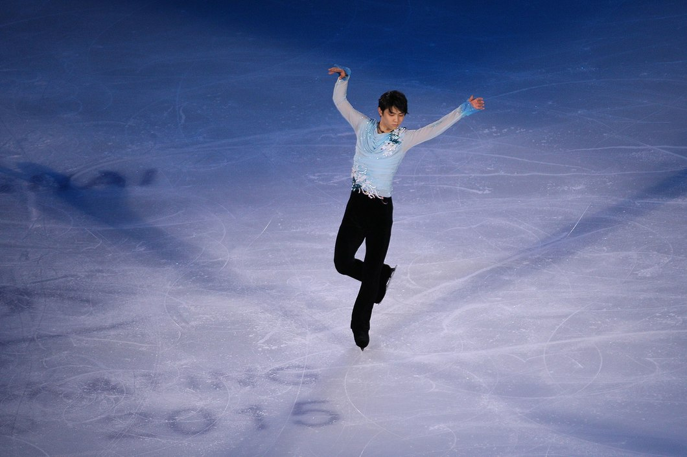
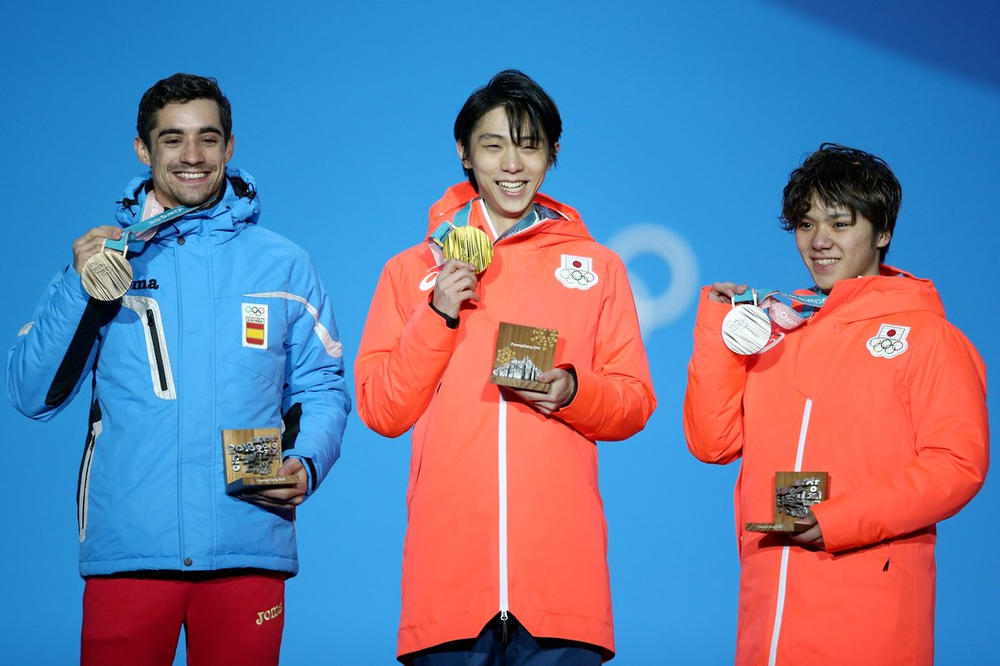
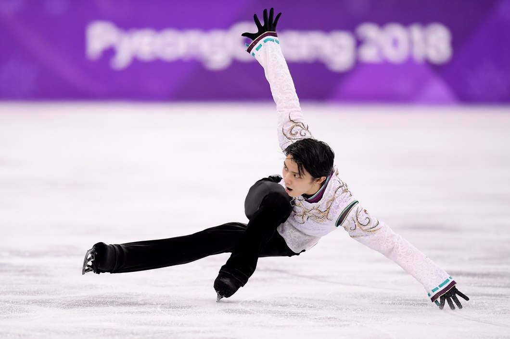

HISTORY-MAKER HANYU’S OWN “MIRACLE ON ICE” IN ACHIEVING PYEONGCHANG GLORY
PYEONGCHANG 2018
HAVING MISSED THE MONTHS PRIOR TO THE 2018 GAMES THROUGH INJURY, THE FIGURE SKATING CHAMPION TRIUMPHED WITH A CONSUMMATE PERFORMANCE IN PYEONGCHANG. HERE, HANYU RECEIVES HIGH PRAISE FROM HIS COACH, HIMSELF AN OLYMPIC SILVER MEDALLIST, AS THE TWO OF THEM REFLECT ON THE FORMER’S SECOND SUCCESSIVE OLYMPIC GOLD.
As the Winnie the Pooh teddy bears rained onto the rink at the Gangneung Ice Arena, it became clear that those present had just witnessed greatness. It was 17 February 2018 and Yuzuru Hanyu had just become the first figure skater for 66 years to retain the men’s singles Olympic title.
But for the Japanese superstar, his victory at the PyeongChang Games felt like it was the first time. “To be honest, I did not really feel like I won the gold medal at the Sochi Olympics,” Hanyu told olympic.org. “So, this time I had a strong desire to grab the victory with my own hands.”
A renowned perfectionist and his own harshest critic, Hanyu had not felt fulfilled by his performance in Russia four years earlier. Aged just 19, he had fallen twice in the opening minute of his free skate before dusting himself off to produce a mesmerising performance that secured gold.
But for Hanyu, PyeongChang offered the chance for redemption on what he considers the grandest stage. “Every competition is very important to me,” the two-time world champion said. “However, the Olympics is not only a sporting event held every four years; it is also the competition that I have been dreaming of since I was young.
“I have always devoted myself to skating, aiming to win at the Olympics. I have always thought that I would never be a true winner unless I win at the Olympics.
“I have come to think of the Olympics as a special competition because I have seen that the pioneers trained hard for it and sacrificed everything to win at the Olympics. I think that is why the Olympics has become my dream and driving force.”
#GETTY IMAGES
Hanyu’s achievement in PyeongChang was even more astonishing because he had not competed for three months due to a ligament injury in his right ankle./p>
“Many people were worried about my injury but also they believed in me even in such a situation,” said Hanyu, whose adoring fans shower the ice after each performance with his unofficial mascot, Pooh Bear. “I wanted to live up to those expectations and fulfil my dream.”
Hanyu’s legendary coach, Canada’s two-time Olympic silver medallist Brian Orser, said that his performance in PyeongChang was “nothing short of a miracle”.
“It was late for him to get back on the ice – we had about six weeks, and we used every single second, literally up to the time when we competed,” Orser said. “We hoped that there would be a peak, that things would come together. And it did, it literally came down to the day. That was when I saw how mentally strong he is.”
Hanyu top-scored in the short programme and clinched gold with second place in the free skate, performing to Shigeru Umebayashi’s Seimei. The then 23-year-old started with a risky quadruple Salchow and quadruple toe loop, followed up with a triple axel. He added another quadruple Salchow and quadruple toe loop which almost caused him to fall, but finished with a flourish that led the TV commentator to call it “an absolute tour de force”.
Finishing on 317.85 points, ahead of his compatriot Shoma Uno on 306.90 and Spanish training partner Javier Fernández on 305.24, Hanyu also made history by winning the 1,000th Olympic Winter Games gold medal.
Orser recalls that, despite the injury concerns and the pressure, Hanyu seemed serene. “What I remember most clearly about these Olympics with him, compared with the last, is that he was so relaxed,” the coach said. “He looked like he was enjoying the time he had on the ice. He wasn’t manic, he was kind of grateful that he was there.”
#GETTY IMAGES
Such an outlook could perhaps be the result of Hanyu’s experience of the 2011 earthquake and tsunami that devastated large swathes of eastern Japan. He was training in his hometown of Sendai when the disaster struck and, after fleeing with his skates still on, spent days in an emergency shelter. Speaking previously about the experience, he said it “totally changed his values” and added: “I often feel that things you take for granted are not always guaranteed.” He said it made him determined to make every day count.
When Hanyu paraded through Sendai with his gold medal from PyeongChang last April, more than 100,000 lined the streets to cheer him.
Orser, who also coached the Republic of Korea’s Yuna Kim to Olympic gold at Vancouver 2010, believes Hanyu has secured his place in history. “I would have to say he is probably the top. I am a history buff and have followed the greats, and skated with some of them myself, but Yuzu’s longevity and what he’s brought to the sport is really incredible. He just continues to improve and challenge himself. He’s probably the best male figure skater ever.”
Hanyu won two Grand Prix events late last year, in Helsinki and Moscow, the latter despite reinjuring his ankle between the short and free programmes, causing him to miss the Grand Prix final. He is set to compete at the World Championships in March, on home ice in Saitama, and told Japanese TV in January: “Next season, I intend to make it through the Grand Prix series and win it all.”
#GETTY IMAGES
So what about the Olympic Winter Games Beijing 2022, where he could join Sweden’s Gillis Grafstrom – who won the men’s singles title in 1920, 1924 and 1928 – and become only the second three-time champion?
“I don’t know about the next Olympics yet. I want to challenge what I have not done yet, and I will continue to make efforts,” Hanyu said. To hear him talk about PyeongChang gives hope that he will be in China. “That feeling of tension and expectation can only be experienced at the Olympics, and I cherish those memories.”
TAGS | OLYMPIC NEWS, PYEONGCHANG 2018, FIGURE SKATING, JAPAN, HANYU, YUZURU
#Article from Olympic